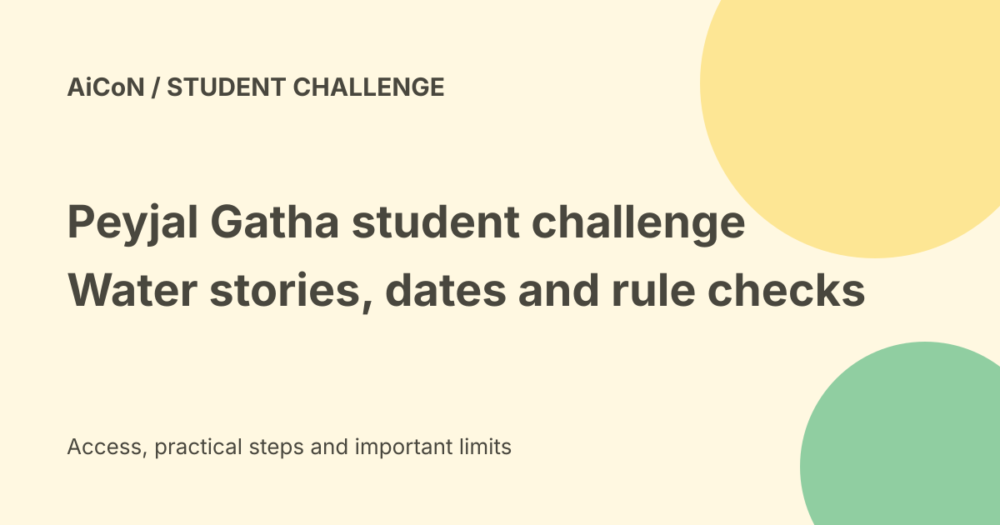

Peyjal Gatha: student water stories, deadline and missing full rules
MyGov lists Peyjal Gatha for students in Classes VIII to XII across recognised school systems in India. The checked page gives 8 December 2026 at 23:45 IST as its end date. Its linked full terms PDF returns 404, so this guide separates visible task details from conditions that still need confirmation.

Who is the challenge for?
The official task page names students enrolled in Classes VIII to XII at schools recognised by State or Union Territory boards, CBSE, KVS, NVS, NIOS and other eligible school systems.
It divides participants into Group A for Classes VIII to X and Group B for Classes XI to XII. The older group is assessed with more emphasis on analysis and feasibility.
What should students make?
The page describes documenting drinking-water experiences, traditional knowledge, local water bodies or practical solutions. The aim is authentic student content that can support education and public awareness.
Choose a topic you can observe and explain. A real account from a school or neighbourhood is more useful than an unsupported dramatic story.
Category one: My Drinking Water Story
This can be a personal, family, school or community story. The examples include life before and after tap water, women's experiences, community action and changes in health, time or dignity.
The visible rule says at least forty to fifty percent should relate directly to drinking water and its impact. Do not assume any general environmental essay meets that focus.
Category two: Water Wisdom of My Village
This category records traditional practices, structures, customs or knowledge. Examples include rainwater harvesting, wells, stepwells, springs, oral traditions and source protection.
At least fifty percent should connect local wisdom with drinking water. Then-and-now photographs may be included. Explain what the practice does and what evidence supports the account.
Category three: Young Water Innovator
The task asks for a practical, low-cost idea to save, reuse, monitor or manage water. School conservation, greywater reuse, awareness tools and simple monitoring are examples.
At least forty percent should address drinking water or its supporting systems and explain the expected impact. Label a proposal as a proposal; do not invent test results.
Category four: My Local Water Body and Its Life
This can document a pond, river, lake, spring or another local source. The examples cover history, ecology, condition, community dependence and suggestions for care.
At least fifty percent should explain its relevance to drinking water or source sustainability. Do not enter dangerous water, trespass or take an unsafe trip to gather material.
How the visible judging weights work
The task assigns twenty-five percent to originality and authenticity, thirty percent to drinking-water relevance, twenty percent to story or idea quality, fifteen percent to local knowledge and ten percent to ethical documentation.
These are judging weights, not a guaranteed score or a formula for winning. Clear evidence, student voice and safe documentation matter.
Consent and dignity
Ask permission before using a person's photograph, voice or private account. Explain where the entry may be used and avoid exposing addresses, phone numbers or sensitive household details.
Students should work with a parent or teacher on consent and public submission. A person's willingness to talk is not automatically permission to publish everything they say.
Dates, reward and cost limits
The official page lists the end date as 8 December 2026 at 23:45 IST. Check the live task again before preparing a final upload.
The visible reward is a Certificate of National Recognition for shortlisted students. No cash prize or guaranteed certificate for every entrant was established. No entry fee was shown in the task text, but the unavailable full terms prevent a complete fee and eligibility verdict.
What the broken PDF means
The secure MyGov task supplies a full-terms link, but that exact PDF returned 404 in a direct request and the browser. We did not recover file-size, word-count, permitted-format, entry-count or ownership conditions.
Do not guess those details or upload a private recording merely because the visible description encourages stories. Ask the organiser or wait for a working official terms file.
A preparation workflow
- Check the live task and full terms.
- Confirm school group and category.
- Choose a local question you can document safely.
- Gather observations with consent.
- Explain the drinking-water connection.
- Keep facts separate from proposals.
- Review privacy and the required upload format.
- Have a parent or teacher review before submission.
No student account, entry or upload was made for this guide.
What changed since the original post?
We preserve the category-specific percentages instead of applying one range to every entry. We add the actual visible certificate reward and state that full terms are unavailable.
Frequently asked questions
Is a general water essay enough?
Use the category's drinking-water focus.
Are cash prizes confirmed?
The visible task names certificates for shortlisted students.
Can I rely on the deadline alone?
No. Check status and full terms before submitting.
Sources: Official MyGov task · Secure official task and full-terms link · Official-linked terms PDF: returned 404. Checked 7 October 2026.